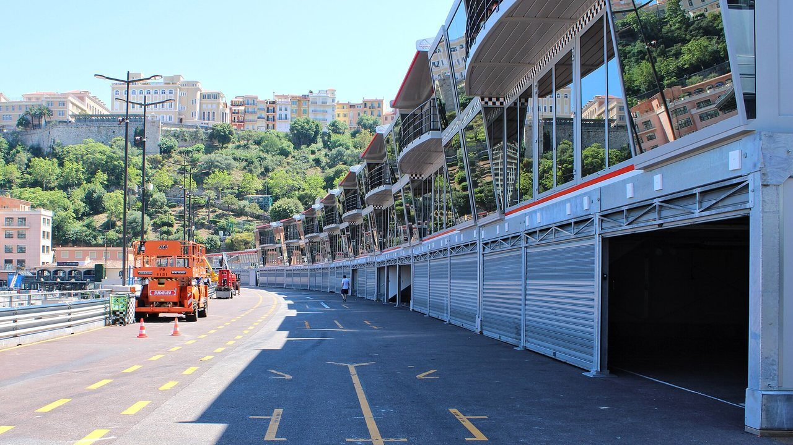

Race, Monaco Street Circuit

Behind
Best +0:01
371W
Target 418 W-47 W
- Cadence
- 87rpm
- Heart
- 140bpm
- Speed
- 26.5km/h
Work14 of 22
0:01
Next: · 0:15 at level 16
+0.0%
38 m climbed
6.54 km
24
Resistance / 32
Solo races your best-time ghost: position reads Ahead or Behind, and solo alone gets a Pause button. Frozen at 14:44.